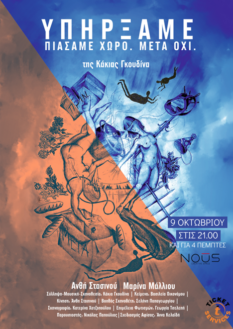
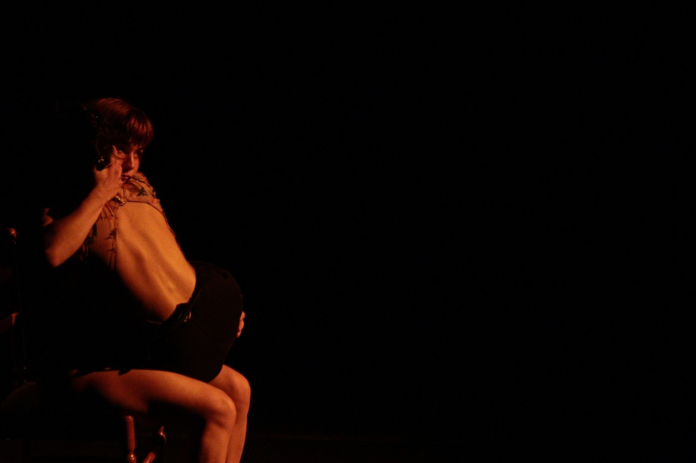
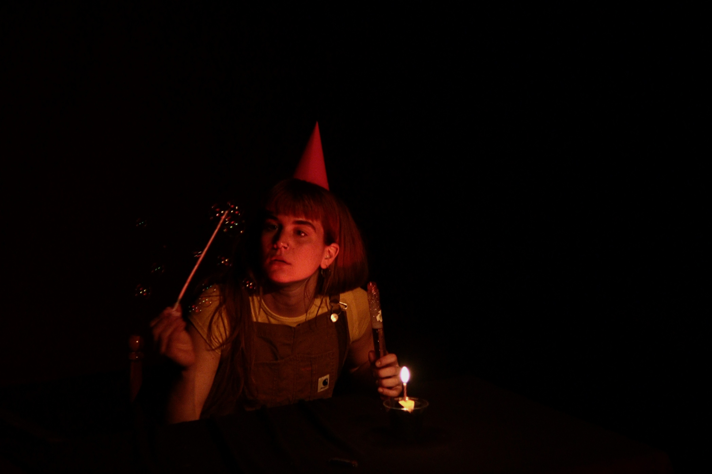
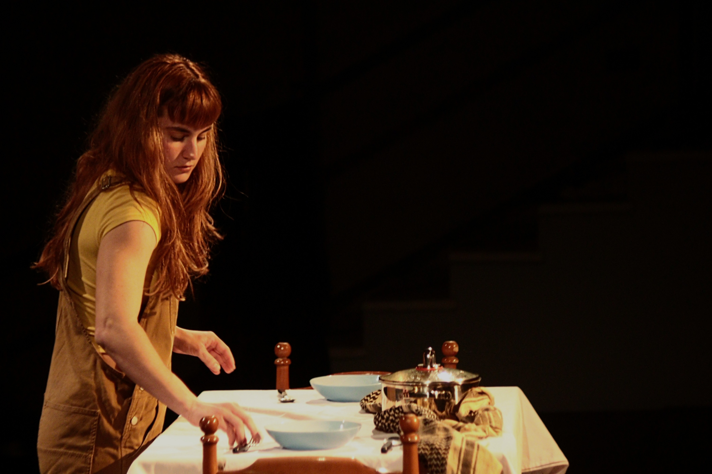

We existed, We took up space. Then we didn't.
We Existed. We Took Up Space. Then We Didn’t. is a multimedia performance that brings together elements of cinema, contemporary music, experimental theatre, and dance. Taking its title from a line by Krystalli Glyniadaki, the work revolves around the idea of disappearance—of time, people, emotions, memory, bonds.
Our story begins with two women whose preparation of an ordinary midday table brings to the surface stories from different places and times, with one shared trait: in each story, something is lost. Thessaloniki, Egypt, the Middle East, 1944, 2025, two minutes ago—space and time in this performance lose their cohesion and linearity.
The personal story of the two women becomes the starting point for a journey through the history of humanity. Through them we meet other characters, and together we travel from loss to loss, crossing landscapes and dates.
The narrative is made up of many stories, set in different times and places, placed one after another and connected through the concept of disappearance—even if they are temporally and geographically far apart. The stories function as symbols; placed side by side, they shape the work’s overall narrative.
Credits
Concept / Direction / Music: Kakia Gkoudina
Performers: Anthie Stasinou, Marina Malliou, Nikolas Papoulias
Texts: Vasileia Oikonomou
Movement: Anthie Stasinou
Lighting Design: Georgia Tselepi
Dramaturgy: Selini Papageorgiou
Set Design: Katerina Chatzopoulou
THEATRO NOŪS, Athens — October 2025
THEATRO NOŪS, Athens — April 2025



